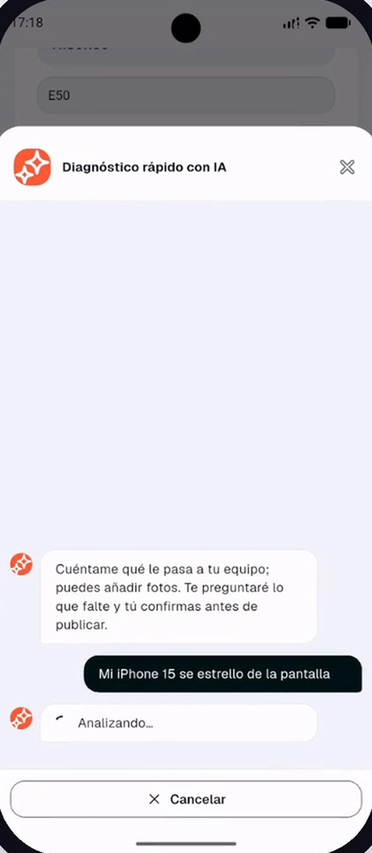
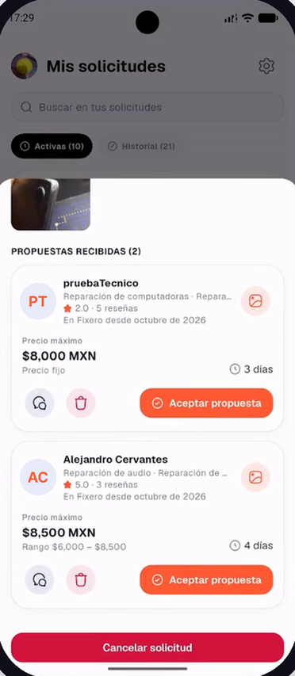
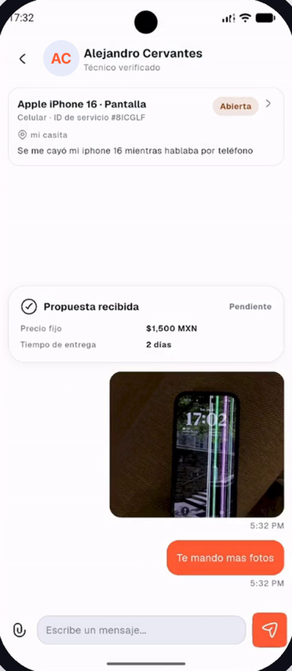
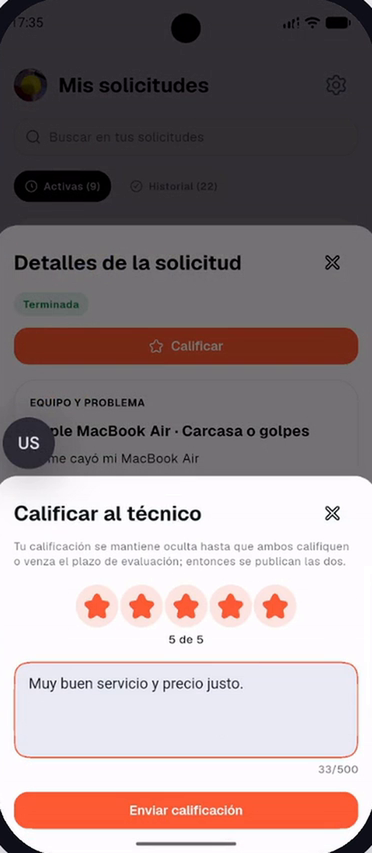

Tu dispositivo, en las mejores manos.
Describe la falla, recibe propuestas de técnicos cerca de ti y elige con confianza.
- Gratis para el cliente
- Técnicos verificados
- Reseñas solo de servicios reales


Dos lados, el mismo hueco
La confianza en la reparación no tiene sistema
El cliente
- ¿Qué le pasa a mi equipo? No sabes explicar la falla ni qué tan grave es.
- ¿Cuánto debería costar? Vas de taller en taller comparando precios.
- ¿Puedo confiar en este técnico? No ves su trabajo ni opiniones de otros clientes.
- ¿Cómo va mi reparación? Todo se pierde entre llamadas y mensajes.
El técnico honesto
- Depende de recomendaciones
- Su reputación depende del lugar donde trabaja
- Tiene que inventar cómo demostrar su trabajo
- No tiene dónde darse a conocer
Así funciona
Los técnicos compiten por tu reparación
En lugar de buscar taller por taller, los técnicos de tu zona vienen a ti.
-
1
Cuéntale al asistente
Con tus palabras o con fotos; la IA identifica la falla y arma tu solicitud.
-
2
Compara propuestas
Técnicos de tu zona te envían precio y tiempo; los ves lado a lado.
-

3Sigue tu reparación
Resuelve dudas y recibe avances en un chat con fotos y video.
-

4Elige con confianza
Revisa trabajos previos y reseñas reales; al final, ambos se califican.
- Fotos y video de la falla antes de cotizar
- Técnicos verificados cerca de ti
- Reparaciones reales para inspirarte
- Para técnicos: clientes nuevos, portafolio e impulsos
La demo
Mira Fixero en acción
- 01DescribeCon ayuda de IA si no sabes qué falla tiene
- 02Recibe propuestas
- 03Compara
- 04Chatea
- 05Elige
- 06Califica
Demo grabada en la app real, sin audio. El paso que se muestra se resalta en la lista.
Lo que hoy existe
La reputación es del técnico, no del local
| Fixero | Facebook y WhatsApp | Google Maps | Plazas y talleres | |
|---|---|---|---|---|
| Comparar propuestas de varios técnicos | ||||
| Técnico con identidad verificada | ||||
| Reseñas solo de servicios reales | ||||
| Ayuda si no sabes qué falla tiene | ||||
| Evidencia del trabajo (portafolio) |
- Sí
- Parcial o manual
- No
Reglas claras para los dos lados
Confianza y seguridad
Identidad del técnico verificada manualmente antes de operar.
Reseñas solo de servicios completados, ocultas hasta que ambos califican.
Suspensión automática con promedio menor a 2.5 y al menos 5 reseñas.
La IA solo elige categorías del catálogo; siempre existe la opción de llenar a mano.
Impulsos de perfil
Gratis para el cliente.
El técnico paga por destacar.
- Clientes nuevos de tu zona que ya describieron la falla.
- Tu portafolio como evidencia de tu trabajo.
- Tu reputación es tuya, no del local donde trabajas.
Tijuana, para empezar
Un mercado grande y desorganizado
| Hoy | Con Fixero |
|---|---|
| No sabes qué tiene tu equipo | Un asistente con IA identifica la falla y arma tu solicitud. |
| Vas de taller en taller | Varias propuestas con precio y tiempo, sin salir de casa. |
| Eliges a ciegas | Portafolio y reseñas reales antes de decidir. |
| Pierdes el hilo de la reparación | Un solo chat con fotos y video, de principio a fin. |
| Los técnicos dependen de recomendaciones | Una reputación propia, construida con evidencia. |
Fuentes: INEGI, DENUE y ENDUTIH 2025.
Antes de empezar
Lo que todos preguntan
¿Cuándo sale la app?
Estamos preparando el lanzamiento en Tijuana, para Android e iOS. Mientras tanto, puedes ver la app funcionando en la demo de esta página.
¿Cuánto me costará usar Fixero?
Nada. Fixero será gratis para el cliente: publicas tu solicitud, recibes propuestas y eliges sin pagar comisión. Solo pagas la reparación que acuerdes con el técnico.
¿Cómo sabré que el técnico es confiable?
Cada técnico pasa por una verificación manual de identidad antes de operar. Además, podrás ver su portafolio de trabajos y reseñas que solo dejan clientes con servicios completados.
¿Qué pasa si no sé qué tiene mi equipo?
Cuéntaselo al asistente con tus palabras o con fotos. La IA identifica la falla, la ubica en el catálogo y arma tu solicitud; tú la confirmas antes de publicar. Si prefieres, la llenas a mano.
¿Las reseñas se pueden manipular?
Solo se pueden calificar servicios terminados, y la calificación de cada parte permanece oculta hasta que ambos califican o vence el plazo. Así nadie responde en represalia.
Soy técnico, ¿Fixero me cobrará comisión?
No. Registrarte y recibir solicitudes será gratis y no habrá comisión por reparación. Si quieres aparecer primero, podrás comprar un impulso de perfil de 3, 7 o 14 días.
¿Dónde estará disponible?
Fixero llegará primero a Tijuana. Más adelante, el plan es crecer a Mexicali y Ensenada.
Muy pronto
Repara con confianza.
Repara con Fixero.
De la incertidumbre a la confianza: el cliente sabrá qué necesita, cuánto pagará y quién lo atenderá; el técnico ganará visibilidad y clientes.
- Próximamente en iOS
- Próximamente en Android